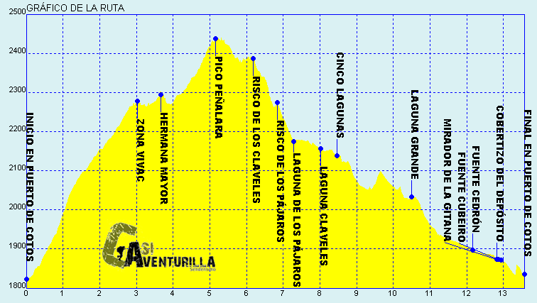

Fue declarado Parque nacional el 25 de junio del 2013. Este parque nacional es el decimoquinto del país en antigüedad y el cuarto en extensión. El parque trata de proteger los once ecosistemas diferentes presentes en la sierra de Guadarrama, algunos de ellos de alta montaña mediterránea únicos en la península. En total, en la zona que será declarada parque nacional hay más de 1280 especies, de las que 13 están en peligro de extinción, más de 1500 plantas autóctonas y 30 tipos de vegetación.
TOPONOMÍA:
El parque nacional de la Sierra de Guadarrama recibe el nombre del rio Guadarrama y del municipio de Guadarrama. Estos dos lugares se encuentran dentro de la sierra de Guadarrama. La palabra Guadarrama proviene de la palabra árabe Uad-ar-rámel, que significa río del arenal y hace referencia al río Guadarrama.
HISTORIA:
Desde la fundación por los romanos de la ciudad de Segovia estuvo siempre asociada la parte central de la Sierra de Guadarrama dicha ciudad, perteneciéndole todos sus bosques y pastos de ambas laderas. Sin embargo, con la Reconquista y posterior repoblación del reino de Toledo(siglos XI y XII) muy pronto existieron conflictos con el concejo de Madrid, e incluso con Guadalajara a través de la presencia en la zona del Real de Manzanares y su castillo, vinculado al Ducado del Infanto de la Familia Mendoza. En el siglo XIX, la división provincial de Javier Burgos consolidó el reparto de las laderas entre Madrid y Segovia, siendo desde entonces la línea de las cumbres el límite entre Castilla la nueva y Castilla la vieja
CLIMA:
El clima del Parque Nacional de Guadarrama es mediterráneo continentalizado, caracterizado por temperaturas que varían mucho del verano al invierno y por tener un verano muy seco. Pero, como en cualquier zona montañosa, el clima en esta sierra varía notablemente con la altura, por lo que hay que diferenciar las distintas zonas climáticas.
FLORA:
Se encuentran cubiertas las laderas de las montañas del Parque Nacional de Guadarrama, por pastizales de alta montaña aprovechados por la ganadería extensiva que produce carne de excelente calidad y certificada como "Ternera de Guadarrama". Debajo de estos, en los pisos supramediterráneo y mesomediterráneo se hallan algunos de los mejores pinares naturales del pino albar que existen en España, como son los de la Sociedad Belga de los Pinares del Paular en rascafría en la vertiente madrileña, y el pinar de Valsain en Segovia,
En la zona más occidental del Parque nacional, las formaciones forestales cambian de especies; así los pinos silvestres se cambian por pinos piñoneros, mientras que los robles se ven sustituidos por quejicos y encinas esta una zona más baja y con menos precipitaciones.
FAUNA:
En estos ecosistemas desarrolla su vida una gran cantidad y variedad de fauna salvaje, encontrándose mamíferos como ciervos, jabalíes, corzos, tejones ... Hay que destacar la existencia de aves migratorias que habitan temporalmente el Parque Nacional de Guadarrama. Una especie que pasa el verano en la sierra es la grulla, la cual en invierno migra al norte de África. En invierno llegan de Europa las cigüeñas y aves rapaces.
MONTAÑAS:
Peñalara 2428, el más alto de todo el Parque nacional de Guadarrama
Risco de los Claveles(2.387 msnm)
Risco de los Pájaros(2.334 msnm)
Hermana mayor(2.885 msnm)
Laguna de los pajaros
Laguna de los claveles
Cinco Lagunas
Página principal